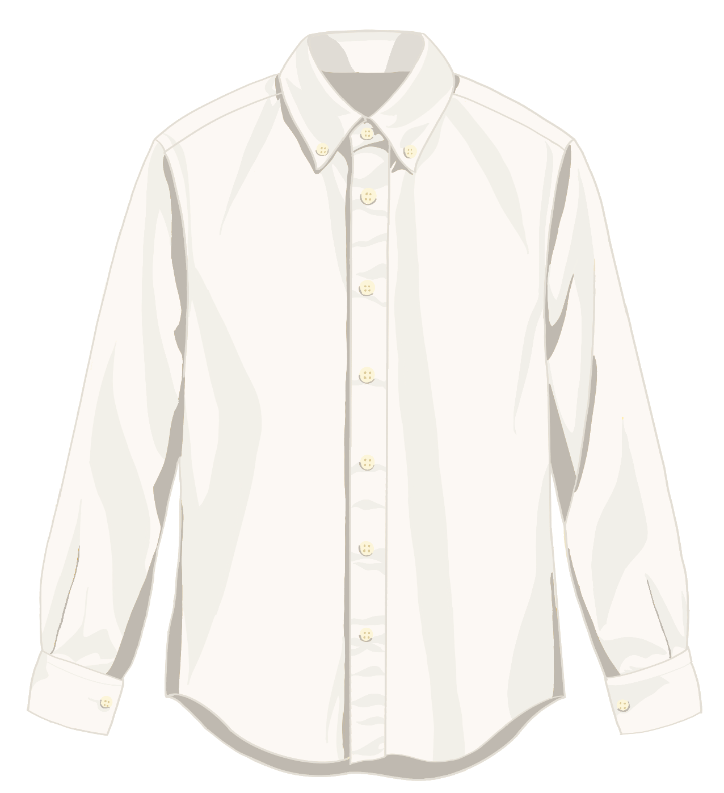

Fig. 01 — oxford shirt, front. Select a marker to enlarge.
01 / Garment explorer
A shirt is
made of
stories.
Every detail has a reason. Select a marker on the shirt to discover the thinking behind its familiar features.
The collar
A button-down collar is stitched down at the points, so it stays flat instead of lifting in the wind. It is the one part of the shirt you meet before anything else, so it carries the shape of the whole garment.
Choose a numbered detail above · or start here